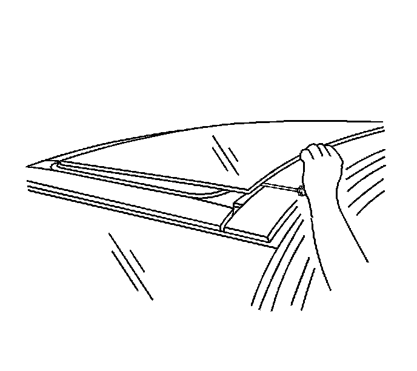
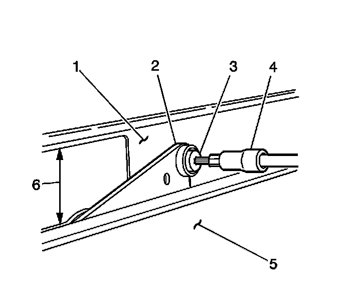
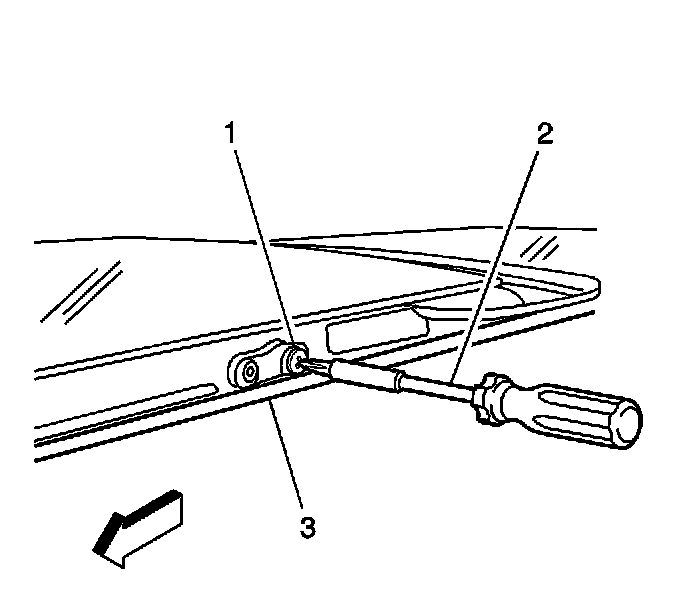

Sunroof Window Replacement (Front)
Sunroof Window Replacement (Front)
Removal Procedure

1. Open the front sunroof window approximately 350 mm (13.7 in) to a point just past the air deflector in the full upright position.
Important: Do not damage the sunroof window weatherstrip seal when removing the screws.
2. Depress the weatherstrip seal in order to access the screw locations.

3. Carefully remove the front sunroof to guide the assembly (2) shouldered screws (3).

4. Carefully remove the rear sunroof to rear cam lift arm screws (1).
5. With the aid of an assistant, lift upward from the side edges of the sunroof window.
6. With the aid of an assistant, remove the sunroof window, rearward from the top of the vehicle.
Installation Procedure
1. With the aid of an assistant, position the front window to the sunroof guide and lift arm assemblies.
2. Align the front and rear holes located on the track arms to the sunroof window attachments.
3. Loosely install the rear screws (1) to each side of the rear cam lift arms.
Notice: Refer to Fastener Notice (Fastener Notice) .
4. Align and install the front shouldered screws (3) to each side of the assembly.
* Tighten the front screws to 5 N.m (44 lb in).
* Tighten the rear screws to 5 N.m (44 lb in).
5. Cycle the sunroof front window closed then to open.
6. Verify the operation of the front sunroof window.